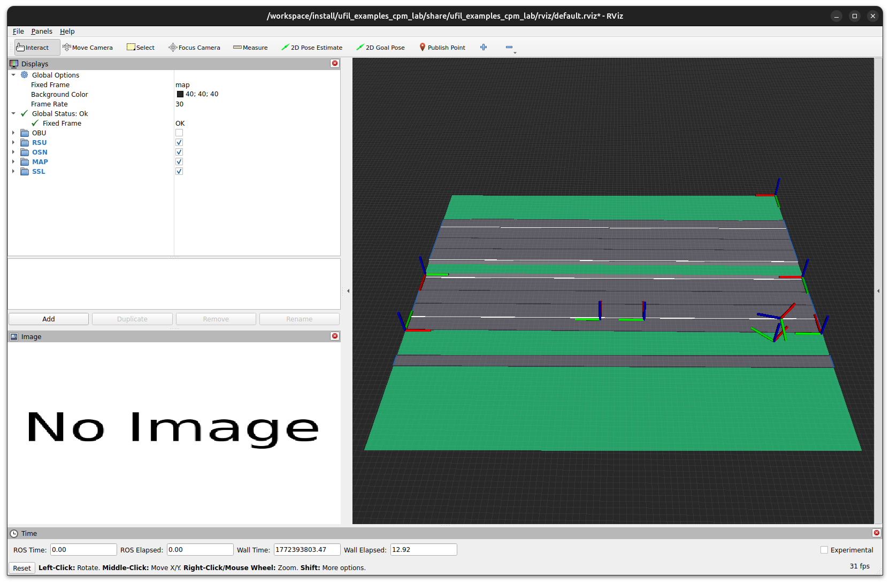
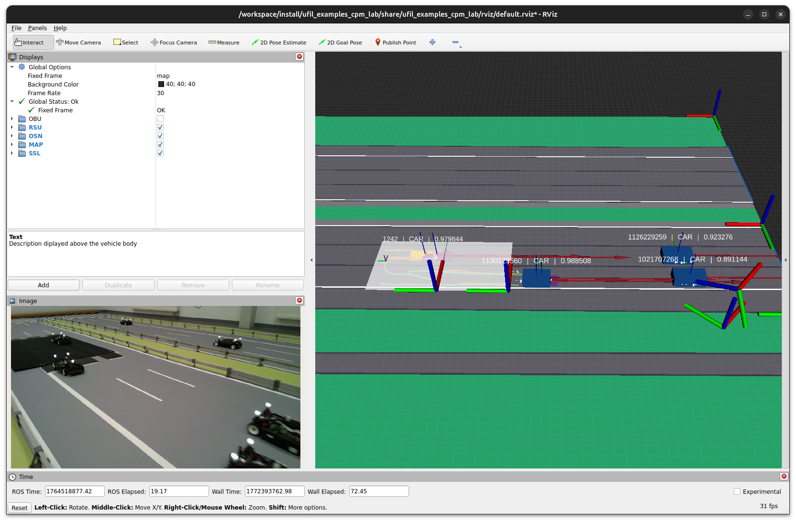

Cyber-Physical Mobility Lab
The Cyber-Physical Mobility (CPM) Lab example in Ufil demonstrates one of the framework’s most advanced use cases.
It consists of three packages and is included in the ufil_examples module.
This scenario illustrates how a complete infrastructure-based localization system, described in the _complex_scenario, can be executed on a small-scale testbed like the CPM Lab.
Usage
Starting the Example
The example comes with an integrated launch file that starts all components of the system.
ros2 launch ufil_examples_simple_scenario visualization.launch.py
The visualization should appear as follows:
{kind=link}

Playing the Dataset
In a second terminal, play back the dataset provided. This automatically replays all necessary sensor data to trigger the perception pipeline. Using a higher clock frequency improves timestamp accuracy.
ros2 bag play ./251130_highway_slow/ --clock 300
The visualization will now display the tracking in action and produce output like this:
{kind=link}

Dataset
The dataset used for this example is currently redacted and will be made available after the paper is accepted at the corresponding venue.